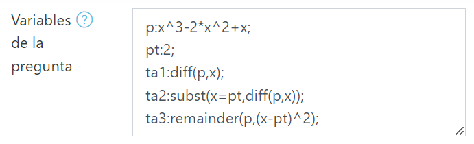
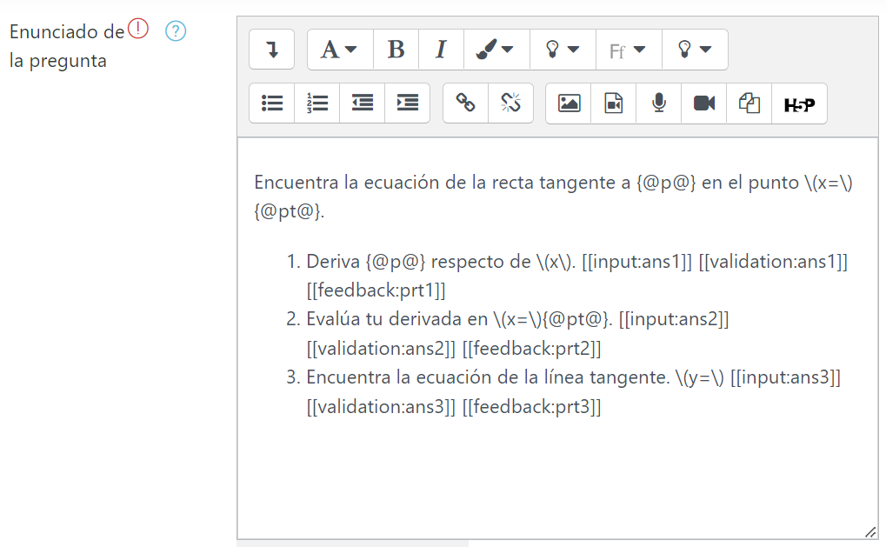
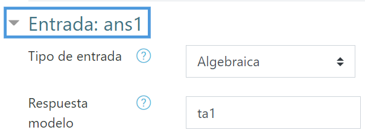
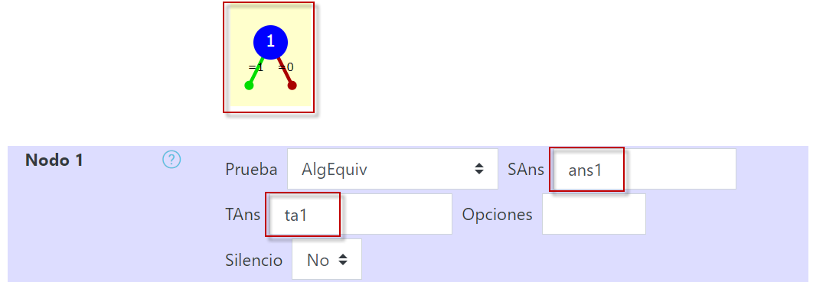
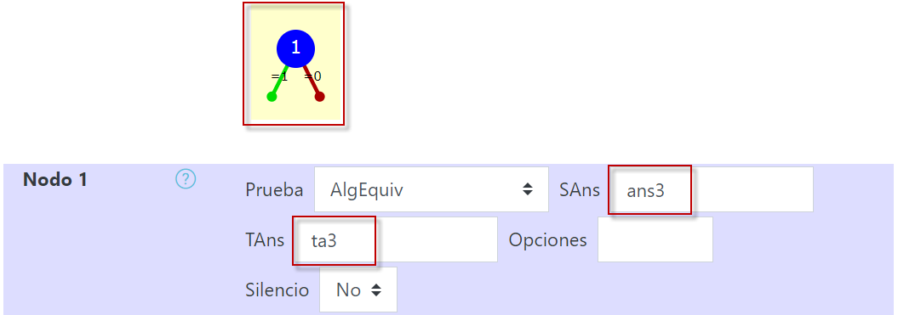
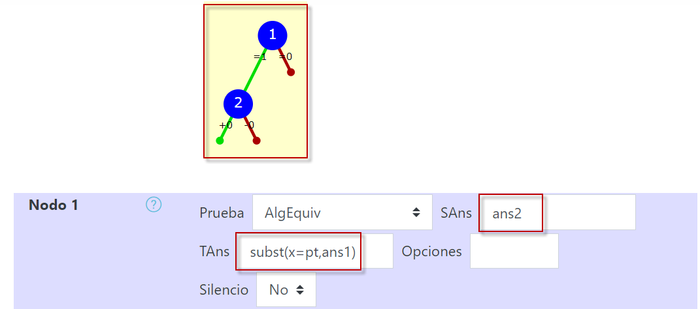
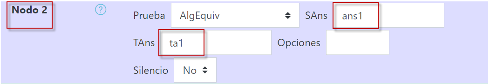
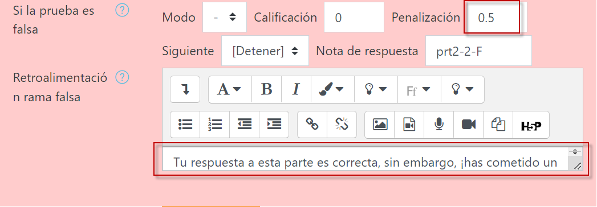
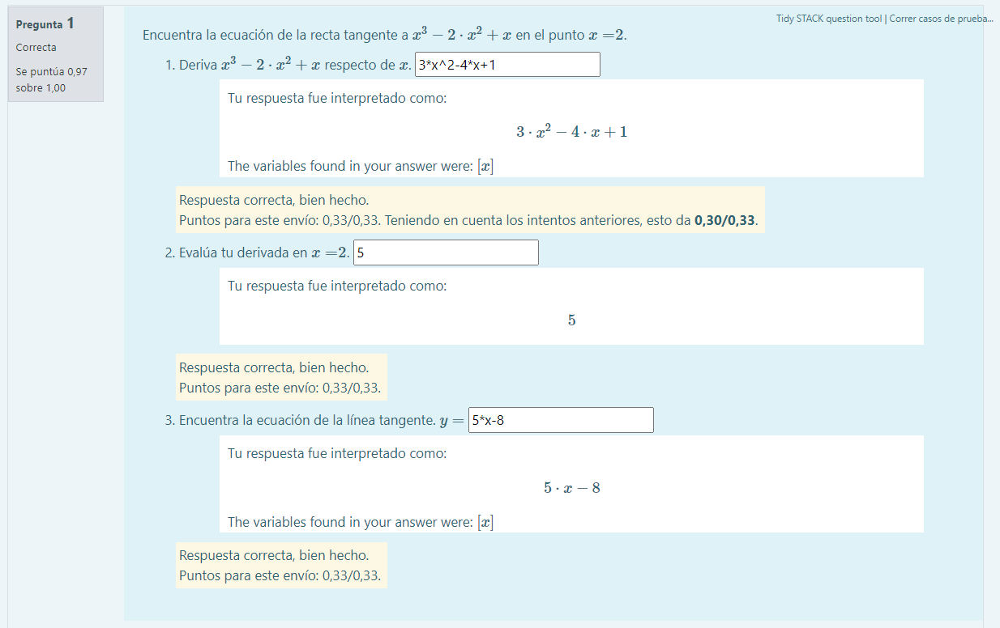
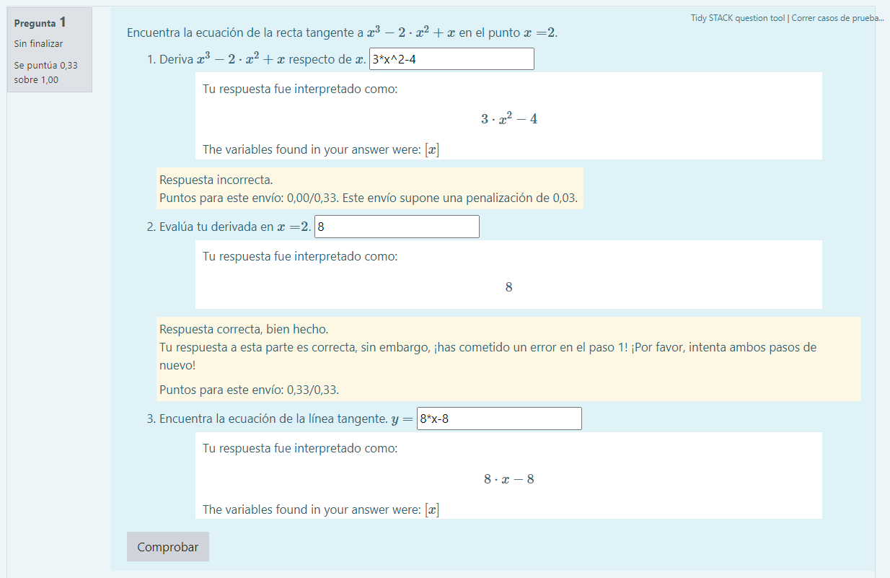

¡A aplicar para avanzar!
Comienza con una nueva pregunta STACK y dale un nombre a la pregunta, por ejemplo, "Líneas tangentes". Esta pregunta tendrá tres partes. Comienza copiando las variables de la pregunta y el texto de la pregunta de la siguiente manera. Observa que no hemos incluido ninguna aleatoriedad, pero hemos utilizado nombres de variables desde el principio para facilitar esto más adelante.
Variables de la pregunta
p:x^3-2*x^2+x;
pt:2;
ta1:diff(p,x);
ta2:subst(x=pt,diff(p,x));
ta3:remainder(p,(x-pt)^2);

Texto de la pregunta
Este texto debe ingresarse directamente en el editor HTML del reactivo en Moodle:
Encuentra la ecuación de la recta tangente a {@p@} en el punto \\(x=\\){@pt@}.
- Deriva {@p@} respecto de \\(x\\). [[input:ans1]] [[validation:ans1]] [[feedback:prt1]]
- Evalúa tu derivada en \\(x=\\){@pt@}. [[input:ans2]] [[validation:ans2]] [[feedback:prt2]]
- Encuentra la ecuación de la línea tangente. \\(y=\\) [[input:ans3]] [[validation:ans3]] [[feedback:prt3]]

Llena la respuesta para ans1 (que existe por defecto) y elimina la etiqueta de retroalimentación de la sección de "retroalimentación específica". Optamos por integrar la retroalimentación dentro de las partes de esta pregunta. Observa que hay un árbol de respuesta potencial para cada "parte".
Actualiza el formulario y luego asegúrate de que las "Respuestas Modelo" estén llenas como ta1, ta2 y ta3.

STACK ha creado los tres árboles de respuesta potencial detectando automáticamente las etiquetas de retroalimentación. A continuación, necesitamos editar los árboles de respuesta potencial. Estos establecerán las propiedades de las respuestas de los estudiantes.
Etapa 1: Obtener una pregunta funcional
La primera etapa es incluir los árboles de respuesta potencial más simples. Estos simplemente asegurarán que las respuestas sean "correctas". En cada árbol de respuesta potencial, asegúrate de que ansi sea algebraicamente equivalente a tai, para i=1,2,3. En esta etapa, tenemos una pregunta funcional. Guárdala y previsualiza la pregunta. Como referencia, las respuestas correctas son:
ans1 = 3*x^2-4*x+1
ans2 = 5
ans3 = 5*x-8


Etapa 2: Calificación de seguimiento
A continuación, implementaremos una calificación de seguimiento simple.
Observa cuidadosamente el paso 2. Este no pide la "respuesta correcta", solo que el estudiante haya evaluado la expresión en el paso 1 correctamente en el punto correcto. Así que la primera tarea es establecer esta propiedad evaluando la respuesta dada en la primera parte y comparándola con la segunda parte. Actualiza el nodo 1 de prt2 para establecer lo siguiente.
AlgEquiv(ans2,subst(x=pt,ans1))

A continuación, añade un solo nodo a prt2 y asegúrate de que este nodo establece que
AlgEquiv(ans1,ta1)

Ahora enlazamos la rama verdadera del nodo 1 al nodo 2 (de prt2). Ahora tenemos tres resultados.
- Nodo 1: ¿El usuario evaluó correctamente la expresión en el paso 1? Si "sí", entonces ve al nodo 2, si "no", entonces termina con cero puntos.
- Nodo 2: ¿El usuario realizó correctamente el paso 1? Si "sí", entonces (esta es la situación ideal), obtuvo la puntuación completa. Si "no", entonces elige la penalización asignada, conforme a tu criterio de profe, y añade algún comentario como el siguiente en el nodo 2 en la retroalimentación falsa: "Tu respuesta a esta parte es correcta, sin embargo, ¡has cometido un error en el paso 1! ¡Por favor, intenta ambos pasos de nuevo!".

Etapa 3: Agregar pruebas de la pregunta
Probablemente sea sensato agregar pruebas a la pregunta. Desde la ventana de vista previa de la pregunta, haz clic en el enlace "Pruebas de la pregunta y versiones desplegadas" en la parte superior derecha de la página.
Agrega una prueba a tu pregunta que contenga las respuestas correctas, de la siguiente manera.
ans1 = 3*x^2-4*x+1
ans2 = 5
ans3 = 5*x-8
Las calificaciones deberían ser todas "1" y las notas de la respuesta como sigue.
prt1 = prt1-1-T
prt2 = prt2-2-T
prt3 = prt3-1-T

Ahora añade una nueva prueba de respuesta para verificar la calificación de seguimiento. Por ejemplo, comete el siguiente error en el paso 1, pero úsalo correctamente en el paso 2.
ans1 = 3*x^2-4
ans2 = 8
ans3 = 8*x-8
Las calificaciones deberían ser todas "0" y las notas de la respuesta como sigue.
prt1 = prt1-1-F
prt2 = prt2-2-F
prt3 = prt3-1-F
Cuando ejecutes las pruebas, también puedes mirar la retroalimentación para confirmar que el sistema está dando el tipo de retroalimentación que deseas para estos tipos de errores.

Etapa 4: Volver aleatoria a la pregunta
A continuación, podemos agregar un polinomio generado aleatoriamente a la pregunta. Debido a que usamos nombres de variables a lo largo de la pregunta desde el principio, redefinir el valor de p en las variables de la pregunta debería ser una cuestión simple de la siguiente manera:
p : (2+rand(3))*x^3+(2+rand(3))*x^2+(2+rand(3))*x;
Necesitarás agregar una nota de pregunta no vacía para permitir la agrupación de versiones aleatorias. Por ejemplo, la siguiente cadena será suficiente.
{@p@}
Ahora necesitamos actualizar las pruebas de la pregunta para reflejar esto. En la primera prueba, eres libre de usar ta1 etc. para especificar las respuestas correctas.
En la segunda prueba, puedes dejar la prueba como está.